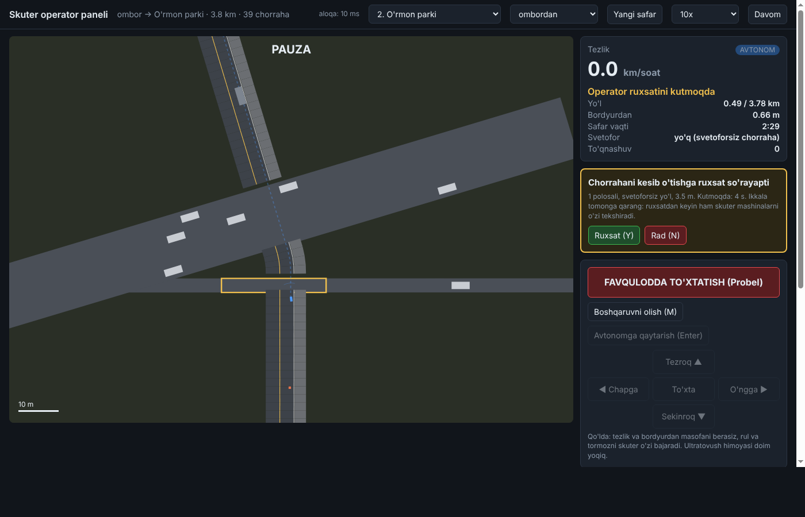
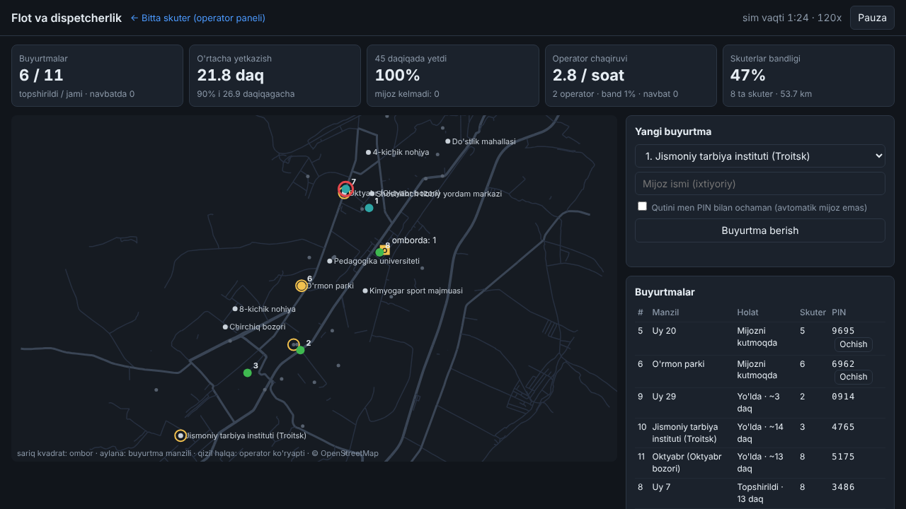
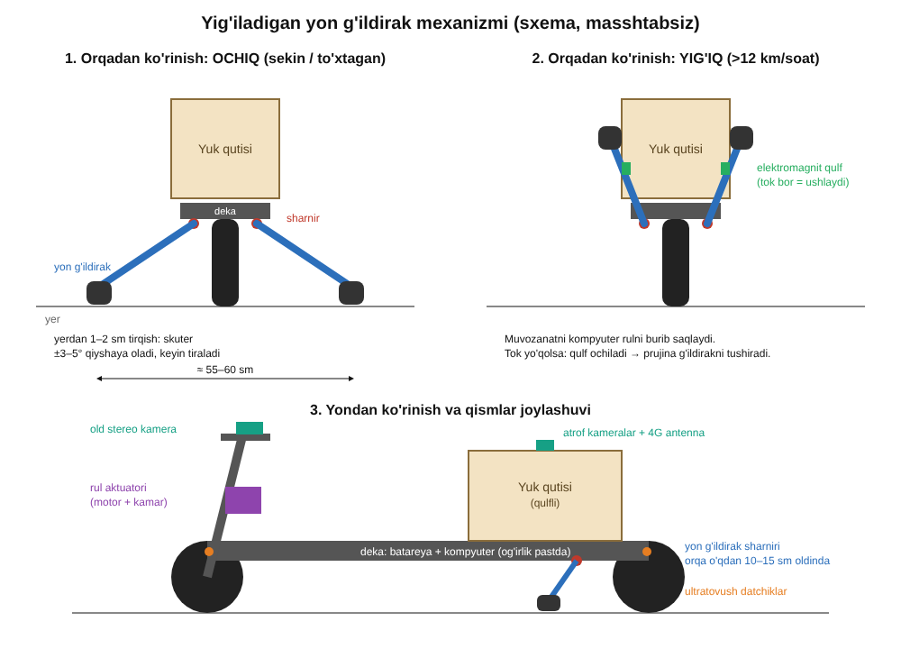

<meta charset="utf-8">
<title>Chirchiq Avtonom Skuter</title>
<meta name="claude:viewport-fit-sides" content="cover">
<meta name="description" content="Chirchiqda avtonom yetkazib berish skuterlari: jonli demo, simulyatsiya natijalari va pilot rejasi.">
<link rel="preconnect" href="https://fonts.googleapis.com">
<link rel="preconnect" href="https://fonts.gstatic.com" crossorigin>
<link rel="stylesheet" href="https://fonts.googleapis.com/css2?family=Unbounded:wght@500;700&family=Onest:wght@400;500;600&family=JetBrains+Mono:wght@400;600&display=swap">
<style>
/* Layout: one narrow reading column; the live Chirchiq map is the hero, with a dispatch panel beside it. */
:root {
  --bg: #f6f4ff;
  --paper: #ffffff;
  --ink: #140a3a;
  --muted: #5a5280;
  --line: #ddd7f7;
  --accent: #ff5a1f;      /* hot orange: scooters, CTAs */
  --accent-ink: #ffffff;
  --route: #0fb8ff;       /* electric cyan: routes */
  --alert: #ff2d8a;       /* magenta: operator needed */
  --violet: #5b2bff;      /* primary brand violet */
  --lime: #c7ff3a;
  --hero-a: #2a0d8f; --hero-b: #6a2bff; --hero-c: #ff5a1f;
  --road: #d9d2f7;
  --road-major: #a99bea;
  --map: #ffffff;
  --display: "Unbounded", "Arial Black", system-ui, sans-serif;
  --body: "Onest", "Segoe UI", system-ui, sans-serif;
  --mono: "JetBrains Mono", ui-monospace, "SFMono-Regular", Menlo, monospace;
}
@media (prefers-color-scheme: dark) {
  :root:not([data-theme="light"]) {
    --bg: #0c0724; --paper: #160f3a; --ink: #f1edff; --muted: #a79fd3; --line: #2c2260;
    --accent: #ff7a3d; --accent-ink: #1a0a00; --route: #2fd0ff; --alert: #ff4fa0; --violet: #8b6bff; --lime: #d4ff5c;
    --hero-a: #1a0860; --hero-b: #4a1bd6; --hero-c: #ff5a1f;
    --road: #241b55; --road-major: #4a3a9a; --map: #100a2e; color-scheme: dark;
  }
}
:root[data-theme="dark"] {
  --bg: #0c0724; --paper: #160f3a; --ink: #f1edff; --muted: #a79fd3; --line: #2c2260;
  --accent: #ff7a3d; --accent-ink: #1a0a00; --route: #2fd0ff; --alert: #ff4fa0; --violet: #8b6bff; --lime: #d4ff5c;
  --hero-a: #1a0860; --hero-b: #4a1bd6; --hero-c: #ff5a1f;
  --road: #241b55; --road-major: #4a3a9a; --map: #100a2e; color-scheme: dark;
}
* { box-sizing: border-box; }
[hidden] { display: none !important; }
body { background: var(--bg); color: var(--ink); font: 400 16px/1.6 var(--body); }
body::before { content: ""; position: fixed; inset: 0 0 auto; height: env(safe-area-inset-top, 0px); z-index: 10; background: var(--bg); }
.wrap { max-width: 1160px; margin: 0 auto; padding-left: max(16px, env(safe-area-inset-left, 0px)); padding-right: max(16px, env(safe-area-inset-right, 0px)); }
h1, h2, h3 { font-family: var(--display); font-weight: 700; line-height: 1.15; text-wrap: balance; margin: 0; letter-spacing: -0.01em; }
h1 { font-size: clamp(1.9rem, 4.6vw, 3.4rem); }
h2 { font-size: clamp(1.35rem, 2.6vw, 2rem); }
h3 { font-size: 1rem; font-weight: 500; }
p { margin: 0; }
a { color: var(--route); }
:focus-visible { outline: 2px solid var(--accent); outline-offset: 2px; }
.eyebrow { font: 600 0.74rem/1.2 var(--mono); letter-spacing: 0.12em; text-transform: uppercase; color: var(--violet); display: inline-flex; align-items: center; gap: 8px; }
.eyebrow::before { content: ""; width: 18px; height: 4px; border-radius: 2px; background: var(--accent); }
.mono { font-family: var(--mono); font-variant-numeric: tabular-nums; }

/* header */
header.top { position: sticky; top: env(safe-area-inset-top, 0px); z-index: 5; background: color-mix(in srgb, var(--bg) 92%, transparent); backdrop-filter: blur(8px); border-bottom: 1px solid var(--line); }
header.top .wrap { display: flex; align-items: center; justify-content: space-between; gap: 12px; padding-block: 10px; }
.brand { display: flex; align-items: center; gap: 10px; font: 700 0.95rem/1 var(--display); }
.brand svg { flex: none; }
nav.links { display: flex; gap: 18px; font-size: 0.9rem; }
nav.links a { color: var(--muted); text-decoration: none; }
nav.links a:hover { color: var(--ink); }
.lang { display: flex; border: 1px solid var(--line); border-radius: 999px; padding: 2px; background: var(--paper); }
.lang button { font: 600 0.75rem/1 var(--mono); border: 0; background: transparent; color: var(--muted); padding: 7px 10px; border-radius: 999px; cursor: pointer; }
.lang button[aria-pressed="true"] { background: var(--violet); color: #fff; }
@media (max-width: 820px) { nav.links { display: none; } }

/* hero */
.hero-band { background: linear-gradient(135deg, var(--hero-a) 0%, var(--hero-b) 55%, var(--hero-c) 130%); color: #fff; position: relative; overflow: hidden; }
.hero-band::after { content: ""; position: absolute; width: 520px; height: 520px; right: -160px; top: -200px; border-radius: 50%; background: radial-gradient(circle, var(--lime) 0%, transparent 65%); opacity: .45; pointer-events: none; }
.hero { padding-block: 56px 40px; display: grid; gap: 22px; position: relative; }
.hero .lede { color: rgba(255,255,255,.85); }
.hero .stage-pill { background: rgba(255,255,255,.14); border-color: rgba(255,255,255,.3); color: #fff; backdrop-filter: blur(6px); }
.hero .stage-pill i { background: var(--lime); box-shadow: 0 0 0 4px rgba(199,255,58,.3); }
.hero h1 em { color: var(--lime); }
.hero .stats { border: 0; gap: 12px; }
.hero .stat { border: 0 !important; border-radius: 16px; padding: 18px !important; color: var(--ink); }
.hero .stat:nth-child(1) { background: var(--lime); }
.hero .stat:nth-child(2) { background: #fff; }
.hero .stat:nth-child(3) { background: var(--route); }
.hero .stat:nth-child(4) { background: var(--accent); color: #fff; }
.hero .stat span { color: inherit; opacity: .8; }
:root[data-theme="dark"] .hero .stat, :root:not([data-theme="light"]) .hero .stat { color: #140a3a; }
.hero .lede { font-size: 1.12rem; max-width: 62ch; }
.hero h1 em { font-style: normal; }
.stage-pill { display: inline-flex; align-items: center; gap: 8px; font: 500 0.82rem/1.3 var(--body); padding: 6px 12px; border-radius: 999px; border: 1px solid var(--line); background: var(--paper); width: fit-content; max-width: 100%; }
.stage-pill i { width: 8px; height: 8px; border-radius: 50%; background: var(--lime); flex: none; }
.stats { display: grid; grid-template-columns: repeat(4, minmax(0, 1fr)); gap: 0; border-top: 1px solid var(--line); border-bottom: 1px solid var(--line); margin-top: 6px; }
.stat { padding: 16px 16px 16px 0; display: grid; gap: 4px; align-content: start; }
.stat + .stat { padding-left: 16px; border-left: 1px solid var(--line); }
.stat b { font: 700 clamp(1.4rem, 3vw, 2.1rem)/1 var(--display); font-variant-numeric: tabular-nums; }
.stat span { font-size: 0.85rem; color: var(--muted); line-height: 1.35; }
@media (max-width: 720px) { .stats { grid-template-columns: repeat(2, minmax(0, 1fr)); } .stat:nth-child(3) { border-left: 0; padding-left: 0; } .stat:nth-child(n+3) { border-top: 1px solid var(--line); } }

/* demo */
section { padding-block: 48px; }
#qanday, #ichida { background: color-mix(in srgb, var(--violet) 7%, var(--bg)); }
#dastur { background: var(--ink); color: var(--bg); }
#dastur .sec-head p, #dastur figcaption { color: color-mix(in srgb, var(--bg) 70%, transparent); }
#dastur figcaption b { color: var(--lime); }
#dastur .eyebrow { color: var(--lime); }
#dastur figure img { border-color: color-mix(in srgb, var(--bg) 20%, transparent); }
#dastur h2 { color: #fff; }
.sec-head { display: grid; gap: 10px; margin-bottom: 22px; max-width: 70ch; }
.sec-head p { color: var(--muted); }
.demo { display: grid; grid-template-columns: minmax(0, 1fr) 340px; gap: 16px; align-items: start; }
@media (max-width: 900px) { .demo { grid-template-columns: minmax(0, 1fr); } }
.mapbox { background: var(--map); border: 1px solid var(--line); border-radius: 14px; overflow: hidden; position: relative; }
.mapbox .canvas-wrap { width: 100%; max-width: calc(74vh * var(--ar, 0.92)); margin: 0 auto; aspect-ratio: var(--ar, 0.92); position: relative; }
.mapbox canvas { position: absolute; inset: 0; width: 100%; height: 100%; display: block; cursor: crosshair; }
.maplegend { display: flex; flex-wrap: wrap; gap: 6px 16px; padding: 10px 14px; border-top: 1px solid var(--line); font-size: 0.78rem; color: var(--muted); background: var(--paper); }
.maplegend span { display: inline-flex; align-items: center; gap: 6px; }
.dot { width: 10px; height: 10px; border-radius: 50%; display: inline-block; flex: none; }
.maptools { position: absolute; top: 10px; left: 10px; right: 10px; display: flex; justify-content: space-between; gap: 8px; pointer-events: none; }
.maptools > * { pointer-events: auto; }
.chip { font: 600 0.75rem/1 var(--mono); background: var(--paper); border: 1px solid var(--line); border-radius: 999px; padding: 7px 10px; color: var(--ink); }
.speed { display: flex; gap: 2px; background: var(--paper); border: 1px solid var(--line); border-radius: 999px; padding: 2px; }
.speed button { font: 600 0.72rem/1 var(--mono); border: 0; background: transparent; color: var(--muted); padding: 6px 9px; border-radius: 999px; cursor: pointer; }
.speed button[aria-pressed="true"] { background: var(--accent); color: var(--accent-ink); }

.panel { display: grid; gap: 12px; }
.card { background: var(--paper); border: 1px solid var(--line); border-radius: 14px; padding: 14px; display: grid; gap: 10px; min-width: 0; }
.card h3 { font-family: var(--body); font-weight: 600; font-size: 0.95rem; }
.order-row { display: grid; grid-template-columns: minmax(0, 1fr) auto; gap: 8px; }
select, .btn { font: 500 0.9rem/1.2 var(--body); border-radius: 10px; padding: 10px 12px; border: 1px solid var(--line); background: var(--bg); color: var(--ink); min-width: 0; }
.btn { cursor: pointer; font-weight: 600; }
.btn.primary { background: var(--accent); color: #fff; border-color: transparent; box-shadow: 0 6px 18px -6px var(--accent); }
.btn.ok { background: var(--violet); color: #fff; border-color: transparent; }
.btn:active { transform: translateY(1px); }
.hint { font-size: 0.78rem; color: var(--muted); }
.kpis { display: grid; grid-template-columns: repeat(2, minmax(0, 1fr)); gap: 8px; }
.kpi { border-radius: 10px; padding: 8px 10px; display: grid; gap: 2px; background: color-mix(in srgb, var(--violet) 10%, var(--paper)); }
.kpi:nth-child(2) { background: color-mix(in srgb, var(--route) 14%, var(--paper)); } .kpi:nth-child(3) { background: color-mix(in srgb, var(--lime) 30%, var(--paper)); } .kpi:nth-child(4) { background: color-mix(in srgb, var(--alert) 12%, var(--paper)); }
.kpi b { font: 600 1.15rem/1.1 var(--mono); font-variant-numeric: tabular-nums; }
.kpi span { font-size: 0.74rem; color: var(--muted); }
.fleet { display: grid; gap: 6px; margin: 0; padding: 0; list-style: none; }
.fleet li { display: grid; grid-template-columns: 26px minmax(0, 1fr) auto; gap: 8px; align-items: center; font-size: 0.83rem; }
.fleet .id { font: 600 0.75rem/1 var(--mono); width: 24px; height: 24px; border-radius: 50%; display: grid; place-items: center; background: var(--accent); color: #fff; }
.fleet .st { color: var(--muted); overflow: hidden; text-overflow: ellipsis; white-space: nowrap; }
.fleet .pct { font: 400 0.75rem/1 var(--mono); color: var(--muted); }
.fleet li.wait .id { background: var(--alert); color: var(--paper); }
.fleet li.idle .id { background: var(--line); color: var(--ink); }
.op-card { border-color: var(--alert); border-width: 2px; }
.op-card .bar { height: 4px; border-radius: 4px; background: var(--line); overflow: hidden; }
.op-card .bar i { display: block; height: 100%; background: var(--alert); width: 100%; }
.op-actions { display: flex; gap: 8px; flex-wrap: wrap; }
.log { margin: 0; padding: 0; list-style: none; display: grid; gap: 4px; max-height: 150px; overflow: auto; font-size: 0.78rem; }
.log li { display: grid; grid-template-columns: 44px minmax(0, 1fr); gap: 6px; color: var(--muted); }
.log li time { font-family: var(--mono); }
.log li.hl { color: var(--ink); }
.demo-note { font-size: 0.8rem; color: var(--muted); margin-top: 12px; max-width: 80ch; }

/* how */
.steps { display: grid; grid-template-columns: repeat(4, minmax(0, 1fr)); gap: 16px; counter-reset: s; }
.step { display: grid; gap: 8px; align-content: start; padding: 18px; border-radius: 16px; background: var(--paper); border: 1px solid var(--line); border-top: 5px solid var(--violet); }
.step:nth-child(2) { border-top-color: var(--route); } .step:nth-child(3) { border-top-color: var(--alert); } .step:nth-child(4) { border-top-color: var(--accent); }
.step::before { counter-increment: s; content: counter(s); font: 700 0.8rem/1 var(--mono); color: #fff; background: var(--violet); width: 26px; height: 26px; border-radius: 50%; display: grid; place-items: center; }
.step:nth-child(2)::before { background: var(--route); } .step:nth-child(3)::before { background: var(--alert); } .step:nth-child(4)::before { background: var(--accent); }
.step p { font-size: 0.92rem; color: var(--muted); }
@media (max-width: 860px) { .steps { grid-template-columns: repeat(2, minmax(0, 1fr)); } }
@media (max-width: 480px) { .steps { grid-template-columns: minmax(0, 1fr); } }

/* results */
.two { display: grid; grid-template-columns: minmax(0, 1.25fr) minmax(0, 1fr); gap: 24px; align-items: start; }
@media (max-width: 900px) { .two { grid-template-columns: minmax(0, 1fr); } }
.tbl-wrap { overflow-x: auto; border: 1px solid var(--line); border-radius: 14px; background: var(--paper); }
table { border-collapse: collapse; width: 100%; font-size: 0.86rem; font-variant-numeric: tabular-nums; }
th, td { text-align: left; padding: 9px 12px; border-bottom: 1px solid var(--line); white-space: nowrap; }
th { font: 600 0.7rem/1.2 var(--mono); letter-spacing: 0.06em; text-transform: uppercase; color: var(--muted); }
td.n, th.n { text-align: right; font-family: var(--mono); }
tr:last-child td { border-bottom: 0; }
.auto { display: inline-flex; gap: 2px; vertical-align: middle; }
.auto i { width: 6px; height: 12px; border-radius: 2px; background: var(--line); }
.auto i.on { background: var(--violet); }
.bars { display: grid; gap: 10px; }
.barrow { display: grid; grid-template-columns: 150px minmax(0, 1fr) 44px; gap: 10px; align-items: center; font-size: 0.82rem; }
.barrow .lbl { font-family: var(--mono); color: var(--muted); font-size: 0.74rem; line-height: 1.3; }
.barrow .track { height: 14px; background: var(--bg); border-radius: 4px; overflow: hidden; border: 1px solid var(--line); }
.barrow .track i { display: block; height: 100%; background: linear-gradient(90deg, var(--violet), var(--route)); }
.barrow .track i.low { background: var(--alert); }
.barrow b { font: 600 0.82rem/1 var(--mono); text-align: right; }
.facts { display: grid; grid-template-columns: repeat(3, minmax(0, 1fr)); gap: 16px; margin-top: 28px; }
.fact { display: grid; gap: 4px; align-content: start; }
.fact { padding: 16px; border-radius: 14px; background: var(--paper); border-left: 5px solid var(--violet); }
.fact:nth-child(2) { border-left-color: var(--route); } .fact:nth-child(3) { border-left-color: var(--accent); }
.fact b { font: 600 1.25rem/1.1 var(--mono); color: var(--violet); }
.fact span { font-size: 0.86rem; color: var(--muted); }
@media (max-width: 720px) { .facts { grid-template-columns: minmax(0, 1fr); } }

/* gallery */
.gallery { display: grid; grid-template-columns: repeat(2, minmax(0, 1fr)); gap: 18px; }
@media (max-width: 720px) { .gallery { grid-template-columns: minmax(0, 1fr); } }
figure { margin: 0; display: grid; gap: 8px; }
figure img { width: 100%; height: auto; border-radius: 10px; border: 1px solid var(--line); background: var(--paper); display: block; }
figure.wide { grid-column: 1 / -1; max-width: 640px; }
figcaption { font-size: 0.86rem; color: var(--muted); }
figcaption b { color: var(--ink); font-weight: 600; }

/* inside the scooter */
.inside { display: grid; grid-template-columns: repeat(3, minmax(0, 1fr)); gap: 0; border-top: 1px solid var(--line); }
.part h3 { color: var(--violet); }
.part { padding: 18px 18px 18px 0; display: grid; gap: 6px; align-content: start; border-bottom: 1px solid var(--line); }
.part:not(:nth-child(3n+1)) { padding-left: 18px; border-left: 1px solid var(--line); }
.part p { font-size: 0.9rem; color: var(--muted); }
@media (max-width: 820px) { .inside { grid-template-columns: minmax(0, 1fr); } .part:not(:nth-child(3n+1)) { padding-left: 0; border-left: 0; } }

/* roadmap */
.road { list-style: none; margin: 0; padding: 0; display: grid; gap: 0; }
.road li { display: grid; grid-template-columns: 28px minmax(0, 1fr) auto; gap: 14px; padding: 14px 0; border-bottom: 1px solid var(--line); align-items: start; }
.road .mk { width: 22px; height: 22px; border-radius: 50%; border: 2px solid var(--line); display: grid; place-items: center; margin-top: 2px; }
.road li.done .mk { background: var(--violet); border-color: var(--violet); }
.road li.done .mk::after { content: ""; width: 8px; height: 4px; border-left: 2px solid var(--paper); border-bottom: 2px solid var(--paper); transform: rotate(-45deg) translate(1px, -1px); }
.road li.now .mk { border-color: var(--accent); }
.road li.now .mk::after { content: ""; width: 8px; height: 8px; border-radius: 50%; background: var(--accent); }
.road h3 { font-family: var(--body); font-weight: 600; font-size: 0.98rem; }
.road p { font-size: 0.88rem; color: var(--muted); }
.road .tag { font: 600 0.68rem/1 var(--mono); letter-spacing: 0.08em; text-transform: uppercase; color: var(--muted); padding-top: 6px; white-space: nowrap; }
.road li.done .tag { color: var(--violet); }
.road li.now .tag { color: var(--accent); }

/* budget */
.budget td:last-child { text-align: right; font-family: var(--mono); }
.budget tr.total td { font-weight: 600; color: var(--ink); }
footer { background: var(--violet); color: #fff; border-top: 0; padding-block: 28px 40px; font-size: 0.86rem; color: var(--muted); }
footer a { color: var(--lime); }
footer .wrap { display: flex; flex-wrap: wrap; justify-content: space-between; gap: 12px; }
@media (prefers-reduced-motion: reduce) { * { scroll-behavior: auto !important; } }
</style>

<header class="top">
  <div class="wrap">
    <div class="brand">
      <svg width="28" height="28" viewBox="0 0 28 28" aria-hidden="true"><rect width="28" height="28" rx="7" fill="var(--violet)"/><path d="M7 19h14M10 19l3-9h4" stroke="var(--lime)" stroke-width="2.4" fill="none" stroke-linecap="round" stroke-linejoin="round"/><circle cx="9" cy="20" r="2.4" fill="#fff"/><circle cx="20" cy="20" r="2.4" fill="#fff"/></svg>
      <span data-t="brand">Avtonom skuter · Chirchiq</span>
    </div>
    <nav class="links">
      <a href="#demo" data-t="navDemo">Jonli demo</a>
      <a href="#natijalar" data-t="navResults">Natijalar</a>
      <a href="#yol-xaritasi" data-t="navRoad">Reja</a>
    </nav>
    <div class="lang" role="group" aria-label="Til / Язык / Language">
      <button type="button" data-lang="uz" aria-pressed="true">UZ</button>
      <button type="button" data-lang="ru" aria-pressed="false">RU</button>
      <button type="button" data-lang="en" aria-pressed="false">EN</button>
    </div>
  </div>
</header>

<main>
  <div class="hero-band"><div class="wrap hero">
    <span class="stage-pill"><i></i><span data-t="stage">Dastur simulyatsiyada sinovdan o'tdi · skuter yig'ish boshlanmoqda</span></span>
    <h1 data-t-html="h1">Chirchiq ko'chalarida <em>o'zi yuradigan</em> yetkazib berish skuteri</h1>
    <p class="lede" data-t="lede">Yuk qutili elektr skuter buyurtmani ombordan mijozgacha o'zi olib boradi. Qiyin chorrahalarda masofadagi operator bir tugma bilan yordam beradi, shuning uchun bitta operator 20 tagacha skuterni kuzatadi.</p>
    <div class="stats">
      <div class="stat"><b class="mono">1 001 km</b><span data-t="s1">simulyatsiyada yurildi, 0 ta to'qnashuv</span></div>
      <div class="stat"><b class="mono">10</b><span data-t="s2">haqiqiy Chirchiq manzili, OpenStreetMap xaritasida</span></div>
      <div class="stat"><b class="mono">98%</b><span data-t="s3">buyurtma 45 daqiqa ichida (20 skuter, 1 operator)</span></div>
      <div class="stat"><b class="mono">~26 <small style="font-size:.5em" data-t="min">daq</small></b><span data-t="s4">o'rtacha yetkazish vaqti</span></div>
    </div>
  </div></div>

  <section id="demo">
    <div class="wrap">
      <div class="sec-head">
        <span class="eyebrow" data-t="demoEyebrow">Jonli demo</span>
        <h2 data-t="demoH">Buyurtma bering va skuterni kuzating</h2>
        <p data-t="demoP">Xarita haqiqiy Chirchiq ko'chalaridan qurilgan. Skuterlar ombordan simulyatsiya topgan marshrutlar bo'ylab yuradi. Skuter yordam so'rasa, operator o'rnida siz ruxsat berasiz.</p>
      </div>
      <div class="demo">
        <div class="mapbox">
          <div class="canvas-wrap">
            <canvas id="map" aria-label="Chirchiq xaritasi"></canvas>
            <div class="maptools">
              <span class="chip mono" id="clock">08:00</span>
              <div class="speed" role="group" aria-label="Tezlik">
                <button type="button" data-speed="30" aria-pressed="false">30×</button>
                <button type="button" data-speed="60" aria-pressed="true">60×</button>
                <button type="button" data-speed="120" aria-pressed="false">120×</button>
              </div>
            </div>
          </div>
          <div class="maplegend">
            <span><i class="dot" style="background:var(--violet);border-radius:3px"></i><span data-t="lgWh">ombor</span></span>
            <span><i class="dot" style="background:var(--route)"></i><span data-t="lgDest">manzil (bosib buyurtma bering)</span></span>
            <span><i class="dot" style="background:var(--alert)"></i><span data-t="lgOp">operator yordami</span></span>
            <span>© OpenStreetMap</span>
          </div>
        </div>

        <div class="panel">
          <div class="card op-card" id="opCard" hidden>
            <h3 id="opTitle">Skuter 2 ruxsat so'rayapti</h3>
            <p class="hint" id="opText"></p>
            <div class="bar"><i id="opBar"></i></div>
            <div class="op-actions">
              <button type="button" class="btn ok" id="opYes" data-t="opYes">Ruxsat berish</button>
            </div>
          </div>
          <div class="card">
            <h3 data-t="newOrder">Yangi buyurtma</h3>
            <div class="order-row">
              <select id="dest" aria-label="Manzil"></select>
              <button type="button" class="btn primary" id="orderBtn" data-t="orderBtn">Buyurtma</button>
            </div>
            <label class="hint" style="display:flex;gap:8px;align-items:center"><input type="checkbox" id="auto" checked> <span data-t="autoOrders">Avtomatik buyurtmalar (har ~10 daqiqada)</span></label>
          </div>
          <div class="card">
            <div class="kpis">
              <div class="kpi"><b id="kDone">0</b><span data-t="kDone">yetkazildi</span></div>
              <div class="kpi"><b id="kAvg">–</b><span data-t="kAvg">o'rtacha vaqt, daq</span></div>
              <div class="kpi"><b id="kKm">0.0</b><span data-t="kKm">km yurildi</span></div>
              <div class="kpi"><b id="kOp">0</b><span data-t="kOp">operator yordami</span></div>
            </div>
            <ul class="fleet" id="fleet"></ul>
          </div>
          <div class="card">
            <h3 data-t="logH">Voqealar</h3>
            <ul class="log" id="log"></ul>
          </div>
        </div>
      </div>
      <p class="demo-note" data-t="demoNote">Demo brauzerda ishlaydigan soddalashtirilgan ko'rinish. Marshrutlar va har bir manzilda operator chaqirilish ehtimoli to'liq simulyatsiya natijalaridan olingan (har bir manzilga 10 tadan safar). Vaqt tezlashtirilgan.</p>
    </div>
  </section>

  <section id="qanday">
    <div class="wrap">
      <div class="sec-head">
        <span class="eyebrow" data-t="howEyebrow">Qanday ishlaydi</span>
        <h2 data-t="howH">Buyurtmadan eshik oldigacha</h2>
      </div>
      <div class="steps">
        <div class="step"><h3 data-t="st1h">Buyurtma</h3><p data-t="st1p">Buyurtma CRM yoki Telegram orqali tushadi. Dispetcher uni omborda turgan, batareyasi yetadigan skuterga beradi.</p></div>
        <div class="step"><h3 data-t="st2h">Yo'lda</h3><p data-t="st2p">Skuter yo'l chetida, O'zbekiston yo'l qoidalari bo'yicha yuradi: svetofor, yo'l berish, qizilda o'ngga burilish, to'xtagan mashinani aylanib o'tish.</p></div>
        <div class="step"><h3 data-t="st3h">Operator</h3><p data-t="st3p">Svetoforsiz katta chorrahada skuter to'xtab, operatordan ruxsat so'raydi. Ruxsatdan keyin ham mashinalarni o'zi tekshiradi.</p></div>
        <div class="step"><h3 data-t="st4h">Topshirish</h3><p data-t="st4p">Mijoz Telegram botda skuterni kuzatadi va qutini PIN kod bilan ochadi. Skuter omborga qaytib zaryadlanadi.</p></div>
      </div>
    </div>
  </section>

  <section id="natijalar">
    <div class="wrap">
      <div class="sec-head">
        <span class="eyebrow" data-t="resEyebrow">Simulyatsiya natijalari</span>
        <h2 data-t="resH">Chirchiq xaritasida 100 ta yetkazish va 1 000 km sinov</h2>
        <p data-t="resP">Har bir manzilga 10 marta borildi, har safar boshqa mashinalar, piyodalar va to'xtagan mashinalar bilan. Birorta ham to'qnashuv bo'lmadi.</p>
      </div>
      <div class="two">
        <div class="tbl-wrap">
          <table>
            <thead><tr><th data-t="thDest">Manzil</th><th class="n" data-t="thLen">Masofa</th><th class="n" data-t="thX">Chorraha</th><th data-t="thAuto">O'zi yetdi</th><th class="n" data-t="thTime">Vaqt</th></tr></thead>
            <tbody id="resBody"></tbody>
          </table>
        </div>
        <div class="card">
          <h3 data-t="fleetH">Flot o'lchami: 45 daqiqada yetkazilgan buyurtmalar</h3>
          <p class="hint" data-t="fleetP">10 soatlik ish kuni modeli, 3 ta tasodifiy kun o'rtachasi.</p>
          <div class="bars" id="bars"></div>
          <p class="hint" data-t="fleetNote">Xulosa: soatiga 12 ta buyurtmaga 20 ta skuter va 1 operator yetadi. Operator vaqtining atigi 9 foizi band.</p>
        </div>
      </div>
      <div class="facts">
        <div class="fact"><b>12.7 <span data-t="kmh" style="font-size:.7em">km/soat</span></b><span data-t="f1">o'rtacha tezlik, yo'l chetida</span></div>
        <div class="fact"><b>56%</b><span data-t="f2">safarlarda operator umuman kerak bo'lmadi. Qolganlari asosan svetoforsiz katta chorrahalar</span></div>
        <div class="fact"><b>14 / 14</b><span data-t="f3">xavfli holat ssenariysi o'tdi: avtobus bekati, eshik ochilishi, kamera o'chishi, yo'l ta'miri</span></div>
      </div>
    </div>
  </section>

  <section id="dastur">
    <div class="wrap">
      <div class="sec-head">
        <span class="eyebrow" data-t="swEyebrow">Tayyor dastur</span>
        <h2 data-t="swH">Operator paneli va flot boshqaruvi allaqachon ishlaydi</h2>
        <p data-t="swP">Panel serverga o'rnatilgan va telefon kamerasi bilan sinalgan. Uchrashuvda jonli ko'rsatish mumkin.</p>
      </div>
      <div class="gallery">
        <figure><figcaption><b data-t="g1h">Operator paneli.</b> <span data-t="g1">Skuter chorrahada ruxsat so'rayapti. Operator ruxsat beradi, rad etadi yoki boshqaruvni oladi.</span></figcaption></figure>
        <figure><figcaption><b data-t="g2h">Flot va dispetcherlik.</b> <span data-t="g2">Buyurtmalar, skuterlar xaritada, PIN kodlar va operator yuklamasi.</span></figcaption></figure>
        <figure class="wide"><figcaption><b data-t="g4h">Yig'iladigan yon g'ildiraklar.</b> <span data-t="g4">To'xtaganda skuter yiqilmaydi. Tok yo'qolsa, prujina g'ildiraklarni 0,3 soniyada tushiradi.</span></figcaption></figure>
      </div>
    </div>
  </section>

  <section id="ichida">
    <div class="wrap">
      <div class="sec-head">
        <span class="eyebrow" data-t="inEyebrow">Skuter ichida</span>
        <h2 data-t="inH">Arzon uskuna, aqlli dastur</h2>
      </div>
      <div class="inside">
        <div class="part"><h3 data-t="p1h">Kameralar</h3><p data-t="p1">Old stereo kamera va yon kameralar: odam, mashina, bordyur va chuqurni ko'radi. Qimmat LiDAR shart emas.</p></div>
        <div class="part"><h3 data-t="p2h">Bort kompyuteri</h3><p data-t="p2">NVIDIA Jetson Orin. Butun dastur kechikishi 100 ms dan kam bo'lishi kerak, simulyatsiya shuni talab qildi.</p></div>
        <div class="part"><h3 data-t="p3h">Xavfsizlik platasi</h3><p data-t="p3">Alohida ESP32 plata: favqulodda to'xtatish, qiyalik va ultratovush. Asosiy kompyuter qotib qolsa ham motorni o'zi to'xtatadi.</p></div>
        <div class="part"><h3 data-t="p4h">Ikki SIM aloqa</h3><p data-t="p4">4G modem ikki xil operator bilan. Aloqa uzilsa skuter yo'l chetiga xavfsiz to'xtaydi.</p></div>
        <div class="part"><h3 data-t="p5h">Muvozanat</h3><p data-t="p5">Ikki g'ildirakli skuter rul bilan muvozanat saqlaydi, sekinlaganda yon g'ildiraklar ochiladi.</p></div>
        <div class="part"><h3 data-t="p6h">Xarita</h3><p data-t="p6">Bepul OpenStreetMap / Yandex xaritasi, svetoforlar va chorrahalar belgilangan. O'zimiz xarita yig'ishimiz shart emas.</p></div>
      </div>
    </div>
  </section>

  <section id="yol-xaritasi">
    <div class="wrap">
      <div class="two">
        <div>
          <div class="sec-head">
            <span class="eyebrow" data-t="rmEyebrow">Reja</span>
            <h2 data-t="rmH">Avval dastur, keyin skuter, keyin Chirchiq yo'llari</h2>
          </div>
          <ol class="road">
            <li class="done"><span class="mk"></span><div><h3 data-t="r1h">Muvozanat va virtual shahar</h3><p data-t="r1">Skuter dasturining 1-versiyasi, trotuar va yo'l simulyatsiyasi.</p></div><span class="tag" data-t="tDone">Tayyor</span></li>
            <li class="done"><span class="mk"></span><div><h3 data-t="r2h">Chirchiq xaritasi, 1 000 km</h3><p data-t="r2">Haqiqiy ko'chalar, 10 manzil, to'qnashuvsiz.</p></div><span class="tag" data-t="tDone">Tayyor</span></li>
            <li class="done"><span class="mk"></span><div><h3 data-t="r3h">Operator paneli va server</h3><p data-t="r3">Brauzerda boshqarish, Telegram ogohlantirishlar, avtomatik yangilanish.</p></div><span class="tag" data-t="tDone">Tayyor</span></li>
            <li class="done"><span class="mk"></span><div><h3 data-t="r4h">Flot, CRM va mijoz boti</h3><p data-t="r4">Buyurtma CRM'dan skuterga, mijoz PIN bilan qutini ochadi.</p></div><span class="tag" data-t="tDone">Tayyor</span></li>
            <li class="now"><span class="mk"></span><div><h3 data-t="r5h">Xavfsizlik platasi va kamera sinovi</h3><p data-t="r5">Qismlar ro'yxati tayyor, stendda sinov.</p></div><span class="tag" data-t="tNow">Hozir</span></li>
            <li><span class="mk"></span><div><h3 data-t="r6h">Birinchi skuterni yig'ish</h3><p data-t="r6">Kamera, kompyuter, yon g'ildirak; 2–4 hafta moslash.</p></div><span class="tag" data-t="tNext">Keyingi</span></li>
            <li><span class="mk"></span><div><h3 data-t="r7h">Chirchiqda pilot</h3><p data-t="r7">5 ta skuter, 3 oy, operator nazoratida, haqiqiy mijozlar.</p></div><span class="tag" data-t="tNext">Keyingi</span></li>
          </ol>
        </div>
        <div>
          <div class="sec-head">
            <span class="eyebrow" data-t="bgEyebrow">Pilot byudjeti</span>
            <h2 data-t="bgH">5 skuter, 3 oy</h2>
          </div>
          <div class="tbl-wrap">
            <table class="budget">
              <tbody>
                <tr><td data-t="b1">5 ta skuter va ehtiyot qismlar</td><td>$25–55k</td></tr>
                <tr><td data-t="b2">Dastur jamoasi (~6 oy)</td><td>$30–70k</td></tr>
                <tr><td data-t="b3">Operatorlar va texnik (3 oy)</td><td>$6–15k</td></tr>
                <tr><td data-t="b4">Ruxsat, sug'urta, sertifikat</td><td>$5–15k</td></tr>
                <tr><td data-t="b5">Operator markazi</td><td>$3–6k</td></tr>
                <tr><td data-t="b6">Joy, internet, transport</td><td>$2–5k</td></tr>
                <tr class="total"><td data-t="b7">Jami</td><td>$70–165k</td></tr>
              </tbody>
            </table>
          </div>
          <p class="hint" style="margin-top:10px" data-t="bgNote">Taxminiy hisob. Tayyor qismlar va ochiq kodli dastur bilan pastki chegaraga yaqinlashish mumkin.</p>
        </div>
      </div>
    </div>
  </section>
</main>

<footer>
  <div class="wrap">
    <span data-t="foot">Avtonom yetkazib berish skuterlari · Chirchiq, O'zbekiston · 2026</span>
    <a href="https://github.com/Arab04/autopilot" target="_blank" rel="noopener" data-t="code">Dastur kodi (GitHub)</a>
  </div>
</footer>

<script>
(() => {
"use strict";
// ---------- translations ----------
const T = {
uz: {},
ru: {
  brand: "Автономный скутер · Чирчик", navDemo: "Живое демо", navResults: "Результаты", navRoad: "План",
  stage: "ПО проверено в симуляции · начинается сборка скутера",
  h1: "Скутер доставки, который <em>сам ездит</em> по улицам Чирчика",
  lede: "Электроскутер с грузовым боксом сам везёт заказ от склада до клиента. На сложных перекрёстках удалённый оператор помогает одной кнопкой, поэтому один оператор ведёт до 20 скутеров.",
  s1: "пройдено в симуляции, 0 столкновений", s2: "реальных адресов Чирчика на карте OpenStreetMap",
  s3: "заказов за 45 минут (20 скутеров, 1 оператор)", s4: "среднее время доставки", min: "мин",
  demoEyebrow: "Живое демо", demoH: "Сделайте заказ и следите за скутером",
  demoP: "Карта построена по реальным улицам Чирчика. Скутеры едут от склада по маршрутам, найденным симуляцией. Когда скутер просит помощи, разрешение даёте вы вместо оператора.",
  lgWh: "склад", lgDest: "адрес (нажмите, чтобы заказать)", lgOp: "помощь оператора",
  opYes: "Разрешить", newOrder: "Новый заказ", orderBtn: "Заказать", autoOrders: "Автозаказы (каждые ~10 минут)",
  kDone: "доставлено", kAvg: "среднее время, мин", kKm: "км пройдено", kOp: "помощь оператора", logH: "События",
  demoNote: "Демо — упрощённый вид в браузере. Маршруты и вероятность вызова оператора для каждого адреса взяты из полной симуляции (по 10 поездок на адрес). Время ускорено.",
  howEyebrow: "Как это работает", howH: "От заказа до двери",
  st1h: "Заказ", st1p: "Заказ приходит из CRM или Telegram. Диспетчер отдаёт его скутеру, который стоит на складе и которому хватит заряда.",
  st2h: "В пути", st2p: "Скутер едет у края дороги по ПДД Узбекистана: светофоры, уступить дорогу, поворот направо на красный, объезд стоящих машин.",
  st3h: "Оператор", st3p: "На большом перекрёстке без светофора скутер останавливается и просит разрешения у оператора. И после разрешения сам проверяет машины.",
  st4h: "Вручение", st4p: "Клиент следит за скутером в Telegram-боте и открывает бокс PIN-кодом. Скутер возвращается на склад и заряжается.",
  resEyebrow: "Результаты симуляции", resH: "100 доставок и 1 000 км на карте Чирчика",
  resP: "На каждый адрес — 10 поездок, каждый раз с другими машинами, пешеходами и припаркованными авто. Ни одного столкновения.",
  thDest: "Адрес", thLen: "Путь", thX: "Перекр.", thAuto: "Сам доехал", thTime: "Время",
  fleetH: "Размер флота: заказы, доставленные за 45 минут", fleetP: "Модель 10-часового рабочего дня, среднее по 3 случайным дням.",
  fleetNote: "Вывод: на 12 заказов в час хватает 20 скутеров и 1 оператора. Оператор занят лишь 9% времени.",
  kmh: "км/ч", f1: "средняя скорость у края дороги", f2: "поездок прошли совсем без оператора. Остальные — в основном большие перекрёстки без светофора",
  f3: "опасных сценариев пройдено: автобусная остановка, открытие двери, отказ камеры, ремонт дороги",
  swEyebrow: "Готовое ПО", swH: "Панель оператора и управление флотом уже работают",
  swP: "Панель развёрнута на сервере и проверена с камерой телефона. Можем показать вживую на встрече.",
  g1h: "Панель оператора.", g1: "Скутер просит разрешения на перекрёстке. Оператор разрешает, отклоняет или берёт управление.",
  g2h: "Флот и диспетчеризация.", g2: "Заказы, скутеры на карте, PIN-коды и загрузка оператора.",
  g3h: "Дорожные тесты.", g3: "14 сценариев и 200 случайных маршрутов: парковка, велополоса, автобус, перекрёстки.",
  g4h: "Складные боковые колёса.", g4: "На остановке скутер не падает. При потере питания пружина опускает колёса за 0,3 секунды.",
  inEyebrow: "Внутри скутера", inH: "Недорогое железо, умное ПО",
  p1h: "Камеры", p1: "Передняя стереокамера и боковые камеры: видят людей, машины, бордюр и ямы. Дорогой LiDAR не нужен.",
  p2h: "Бортовой компьютер", p2: "NVIDIA Jetson Orin. Задержка всей программы должна быть меньше 100 мс — этого требует симуляция.",
  p3h: "Плата безопасности", p3: "Отдельная плата ESP32: аварийная остановка, наклон и ультразвук. Останавливает мотор, даже если основной компьютер завис.",
  p4h: "Связь на двух SIM", p4: "4G-модем с двумя операторами. При потере связи скутер безопасно останавливается у края дороги.",
  p5h: "Равновесие", p5: "Двухколёсный скутер держит равновесие рулём, при замедлении раскрываются боковые колёса.",
  p6h: "Карта", p6: "Бесплатные OpenStreetMap / Яндекс Карты со светофорами и перекрёстками. Собственная съёмка карты не нужна.",
  rmEyebrow: "План", rmH: "Сначала ПО, потом скутер, потом дороги Чирчика",
  r1h: "Равновесие и виртуальный город", r1: "Первая версия ПО скутера, симуляция тротуара и дороги.",
  r2h: "Карта Чирчика, 1 000 км", r2: "Реальные улицы, 10 адресов, без столкновений.",
  r3h: "Панель оператора и сервер", r3: "Управление из браузера, уведомления в Telegram, автообновление.",
  r4h: "Флот, CRM и бот клиента", r4: "Заказ из CRM на скутер, клиент открывает бокс PIN-кодом.",
  r5h: "Плата безопасности и тест камеры", r5: "Список деталей готов, тест на стенде.",
  r6h: "Сборка первого скутера", r6: "Камеры, компьютер, боковые колёса; 2–4 недели настройки.",
  r7h: "Пилот в Чирчике", r7: "5 скутеров, 3 месяца, под контролем оператора, реальные клиенты.",
  tDone: "Готово", tNow: "Сейчас", tNext: "Далее",
  bgEyebrow: "Бюджет пилота", bgH: "5 скутеров, 3 месяца",
  b1: "5 скутеров и запчасти", b2: "Команда разработки (~6 мес.)", b3: "Операторы и техник (3 мес.)",
  b4: "Разрешения, страховка, сертификация", b5: "Операторский центр", b6: "Помещение, интернет, транспорт", b7: "Итого",
  bgNote: "Оценка приблизительная. С готовыми компонентами и открытым ПО можно приблизиться к нижней границе.",
  foot: "Автономные скутеры доставки · Чирчик, Узбекистан · 2026", code: "Код (GitHub)",
  // dynamic
  stIdle: "На складе", stLoad: "Загрузка", stOut: "Едет к", stWait: "Ждёт оператора", stCust: "Клиент открывает бокс", stRet: "Возвращается",
  opTitle: "Скутер {id} просит разрешения", opText: "Большой перекрёсток без светофора по пути к «{d}». Если вы не ответите, разрешит дежурный оператор.",
  lOrder: "Заказ #{n}: {d}", lQueue: "Заказ #{n} в очереди: свободных скутеров нет", lGo: "Скутер {id} выехал к «{d}»",
  lOpAsk: "Скутер {id} просит разрешения на перекрёстке", lOpYou: "Вы разрешили, скутер {id} поехал", lOpAuto: "Оператор разрешил, скутер {id} поехал",
  lArr: "Скутер {id} у клиента ({m} мин). PIN {pin}", lDone: "Заказ #{n} вручён", lBack: "Скутер {id} вернулся на склад",
  clickHint: "Нажмите на адрес на карте"
},
en: {
  brand: "Autonomous scooter · Chirchiq", navDemo: "Live demo", navResults: "Results", navRoad: "Plan",
  stage: "Software proven in simulation · scooter assembly starting",
  h1: "A delivery scooter that <em>drives itself</em> through the streets of Chirchiq",
  lede: "An electric scooter with a cargo box carries each order from the warehouse to the customer on its own. At hard intersections a remote operator helps with one tap, so one operator can supervise up to 20 scooters.",
  s1: "driven in simulation, 0 collisions", s2: "real Chirchiq destinations on the OpenStreetMap map",
  s3: "of orders within 45 minutes (20 scooters, 1 operator)", s4: "average delivery time", min: "min",
  demoEyebrow: "Live demo", demoH: "Place an order and watch the scooter",
  demoP: "The map is built from Chirchiq's real streets. Scooters leave the warehouse along the routes the simulation found. When a scooter asks for help, you approve it in the operator's place.",
  lgWh: "warehouse", lgDest: "destination (tap to order)", lgOp: "operator assist",
  opYes: "Approve", newOrder: "New order", orderBtn: "Order", autoOrders: "Automatic orders (every ~10 minutes)",
  kDone: "delivered", kAvg: "average time, min", kKm: "km driven", kOp: "operator assists", logH: "Events",
  demoNote: "The demo is a simplified in-browser view. Routes and the chance of an operator call at each destination come from the full simulation (10 trips per destination). Time is sped up.",
  howEyebrow: "How it works", howH: "From order to doorstep",
  st1h: "Order", st1p: "The order arrives from the CRM or Telegram. The dispatcher gives it to a scooter waiting at the warehouse with enough battery.",
  st2h: "On the road", st2p: "The scooter rides at the road edge under Uzbekistan traffic rules: traffic lights, yielding, right turn on red, passing parked cars.",
  st3h: "Operator", st3p: "At a large intersection without lights the scooter stops and asks the operator for approval. Even after approval it checks traffic itself.",
  st4h: "Handover", st4p: "The customer tracks the scooter in a Telegram bot and opens the box with a PIN. The scooter returns to the warehouse to charge.",
  resEyebrow: "Simulation results", resH: "100 deliveries and 1,000 km on the Chirchiq map",
  resP: "Each destination was driven 10 times, each time with different cars, pedestrians and parked vehicles. There were no collisions.",
  thDest: "Destination", thLen: "Route", thX: "Junctions", thAuto: "Autonomous", thTime: "Time",
  fleetH: "Fleet size: orders delivered within 45 minutes", fleetP: "10-hour working day model, average of 3 random days.",
  fleetNote: "Takeaway: 20 scooters and 1 operator handle 12 orders an hour. The operator is busy only 9% of the time.",
  kmh: "km/h", f1: "average speed at the road edge", f2: "of trips needed no operator at all. The rest were mostly large intersections without lights",
  f3: "hazard scenarios passed: bus stop, opening car door, camera failure, roadworks",
  swEyebrow: "Working software", swH: "The operator panel and fleet management already run",
  swP: "The panel is deployed on a server and tested with a phone camera. We can show it live in a meeting.",
  g1h: "Operator panel.", g1: "A scooter asks for approval at an intersection. The operator approves, rejects or takes control.",
  g2h: "Fleet and dispatch.", g2: "Orders, scooters on the map, PIN codes and operator load.",
  g3h: "Road tests.", g3: "14 scenarios and 200 random street routes: parking, bike lanes, buses, intersections.",
  g4h: "Folding side wheels.", g4: "The scooter does not tip over when stopped. If power is lost, a spring drops the wheels in 0.3 seconds.",
  inEyebrow: "Inside the scooter", inH: "Low-cost hardware, smart software",
  p1h: "Cameras", p1: "A front stereo camera and side cameras see people, cars, curbs and potholes. No expensive LiDAR required.",
  p2h: "Onboard computer", p2: "NVIDIA Jetson Orin. End-to-end latency must stay under 100 ms, as the simulation showed.",
  p3h: "Safety board", p3: "A separate ESP32 board: emergency stop, tilt and ultrasonic sensing. It stops the motor even if the main computer freezes.",
  p4h: "Dual-SIM link", p4: "4G modem on two carriers. If the link drops, the scooter pulls over safely.",
  p5h: "Balance", p5: "The two-wheel scooter balances by steering; side wheels deploy when it slows down.",
  p6h: "Map", p6: "Free OpenStreetMap / Yandex maps with traffic lights and junctions marked. No custom mapping run needed.",
  rmEyebrow: "Plan", rmH: "Software first, then the scooter, then Chirchiq's roads",
  r1h: "Balance and virtual city", r1: "Scooter software v1, sidewalk and road simulation.",
  r2h: "Chirchiq map, 1,000 km", r2: "Real streets, 10 destinations, no collisions.",
  r3h: "Operator panel and server", r3: "Browser control, Telegram alerts, automatic updates.",
  r4h: "Fleet, CRM and customer bot", r4: "Orders flow from the CRM to scooters; customers open the box with a PIN.",
  r5h: "Safety board and camera test", r5: "Parts list ready, bench testing.",
  r6h: "Build the first scooter", r6: "Cameras, computer, side wheels; 2–4 weeks of tuning.",
  r7h: "Pilot in Chirchiq", r7: "5 scooters, 3 months, operator-supervised, real customers.",
  tDone: "Done", tNow: "Now", tNext: "Next",
  bgEyebrow: "Pilot budget", bgH: "5 scooters, 3 months",
  b1: "5 scooters and spare parts", b2: "Software team (~6 months)", b3: "Operators and technician (3 months)",
  b4: "Permits, insurance, certification", b5: "Operator center", b6: "Space, internet, transport", b7: "Total",
  bgNote: "Rough estimate. Off-the-shelf parts and open-source software move it toward the lower bound.",
  foot: "Autonomous delivery scooters · Chirchiq, Uzbekistan · 2026", code: "Source code (GitHub)",
  stIdle: "At warehouse", stLoad: "Loading", stOut: "Heading to", stWait: "Waiting for operator", stCust: "Customer opening box", stRet: "Returning",
  opTitle: "Scooter {id} asks for approval", opText: "Large unsignalled intersection on the way to “{d}”. If you don't answer, the on-duty operator approves.",
  lOrder: "Order #{n}: {d}", lQueue: "Order #{n} queued: no free scooter", lGo: "Scooter {id} left for “{d}”",
  lOpAsk: "Scooter {id} asks for approval at an intersection", lOpYou: "You approved, scooter {id} is moving", lOpAuto: "Operator approved, scooter {id} is moving",
  lArr: "Scooter {id} at customer ({m} min). PIN {pin}", lDone: "Order #{n} handed over", lBack: "Scooter {id} back at warehouse",
  clickHint: "Tap a destination on the map"
}
};
const UZ_DYN = {
  stIdle: "Omborda", stLoad: "Yuklanmoqda", stOut: "Ketmoqda:", stWait: "Operatorni kutmoqda", stCust: "Mijoz qutini ochmoqda", stRet: "Omborga qaytmoqda",
  opTitle: "Skuter {id} ruxsat so'rayapti", opText: "\"{d}\" yo'lida svetoforsiz katta chorraha. Javob bermasangiz, navbatchi operator ruxsat beradi.",
  lOrder: "Buyurtma #{n}: {d}", lQueue: "Buyurtma #{n} navbatda: bo'sh skuter yo'q", lGo: "Skuter {id} \"{d}\" ga yo'lga chiqdi",
  lOpAsk: "Skuter {id} chorrahada ruxsat so'rayapti", lOpYou: "Siz ruxsat berdingiz, skuter {id} yurdi", lOpAuto: "Operator ruxsat berdi, skuter {id} yurdi",
  lArr: "Skuter {id} mijozda ({m} daq). PIN {pin}", lDone: "Buyurtma #{n} topshirildi", lBack: "Skuter {id} omborga qaytdi",
  clickHint: "Xaritadagi manzilni bosing"
};
// capture Uzbek originals from the page
document.querySelectorAll("[data-t]").forEach(el => { T.uz[el.dataset.t] = el.textContent; });
document.querySelectorAll("[data-t-html]").forEach(el => { T.uz[el.dataset.tHtml] = el.innerHTML; });
Object.assign(T.uz, UZ_DYN);

const NAMES = {
  uz: ["Jismoniy tarbiya instituti", "O'rmon parki", "Chirchiq bozori", "8-kichik nohiya", "Oktyabr bozori", "Pedagogika universiteti", "Tez tibbiy yordam markazi", "4-kichik nohiya", "Do'stlik mahallasi", "Kimyogar sport majmuasi"],
  ru: ["Институт физкультуры", "Лесопарк", "Чирчикский базар", "8-й микрорайон", "Октябрьский базар", "Педагогический университет", "Центр экстренной медпомощи", "4-й микрорайон", "Махалля Дустлик", "Спорткомплекс «Кимёгар»"],
  en: ["Physical Culture Institute", "Forest Park", "Chirchiq Bazaar", "Microdistrict 8", "Oktyabr Bazaar", "Pedagogical University", "Emergency Medical Center", "Microdistrict 4", "Dustlik neighborhood", "Kimyogar Sports Complex"]
};
// Stage 4 results: length m, junctions, autonomous of 10, avg minutes
const RES = [[7879,52,5,39.9],[3780,39,2,18.6],[4907,32,9,21.2],[5311,42,4,24.0],[2964,26,5,15.6],[2254,22,10,10.4],[2023,12,2,11.0],[2634,26,2,21.2],[3835,27,7,17.3],[1309,14,10,6.3]];
// Fleet sizing: orders/h, scooters, operators, on-time %
const FLEET = [[6,5,1,50],[6,10,1,99],[12,10,1,51],[12,20,1,98],[24,20,1,49],[24,30,2,98]];

let lang = "uz";
try { const s = localStorage.getItem("lang"); if (s && T[s]) lang = s; } catch (e) {}
const t = (k, v = {}) => (T[lang][k] ?? T.uz[k] ?? k).replace(/\{(\w+)\}/g, (_, n) => v[n] ?? "");
const nm = i => NAMES[lang][i];

function applyLang() {
  document.documentElement.lang = lang;
  document.querySelectorAll("[data-t]").forEach(el => { el.textContent = t(el.dataset.t); });
  document.querySelectorAll("[data-t-html]").forEach(el => { el.innerHTML = t(el.dataset.tHtml); });
  document.querySelectorAll(".lang button").forEach(b => b.setAttribute("aria-pressed", b.dataset.lang === lang));
  renderTables(); fillSelect(); renderFleet(); renderLog();
  if (opQueue.length) showOp();
  drawStatic();
}
document.querySelectorAll(".lang button").forEach(b => b.addEventListener("click", () => {
  lang = b.dataset.lang; try { localStorage.setItem("lang", lang); } catch (e) {}
  applyLang();
}));

function renderTables() {
  const tb = document.getElementById("resBody");
  const mn = t("min");
  tb.innerHTML = RES.map((r, i) => `<tr><td>${i + 1}. ${esc(nm(i))}</td><td class="n">${(r[0] / 1000).toFixed(1)} km</td><td class="n">${r[1]}</td><td><span class="auto" aria-label="${r[2]}/10">${Array.from({length: 10}, (_, k) => `<i class="${k < r[2] ? "on" : ""}"></i>`).join("")}</span> <span class="mono" style="font-size:.78rem;color:var(--muted)">${r[2]}/10</span></td><td class="n">${r[3].toFixed(0)} ${mn}</td></tr>`).join("");
  const unit = { uz: ["buyurtma/soat", "skuter", "op."], ru: ["заказов/ч", "скутеров", "оп."], en: ["orders/h", "scooters", "op."] }[lang];
  document.getElementById("bars").innerHTML = FLEET.map(f => `<div class="barrow"><span class="lbl">${f[0]} ${unit[0]}<br>${f[1]} ${unit[1]}, ${f[2]} ${unit[2]}</span><span class="track"><i class="${f[3] < 80 ? "low" : ""}" style="width:${f[3]}%"></i></span><b>${f[3]}%</b></div>`).join("");
}
function esc(s) { return String(s).replace(/[&<>"]/g, c => ({ "&": "&amp;", "<": "&lt;", ">": "&gt;", '"': "&quot;" }[c])); }

// ---------- live demo ----------
const canvas = document.getElementById("map");
const ctx = canvas.getContext("2d");
let MAP = null, scale = 1, dpr = 1, roadsLayer = null;
const routes = [];       // {pts:[[x,y]...], cum:[], lenPx, lenM}
const scooters = [];
const orders = [];       // queue
const logItems = [];
const opQueue = [];      // scooters waiting for operator
let speed = 60, simT = 8 * 3600, nextAuto = simT + 120, orderNo = 0;
const stats = { done: 0, times: [], km: 0, op: 0 };
const AUTO = RES.map(r => r[2] / 10);
const OP_WAIT_REAL = 7;  // seconds before the duty operator answers

function col(name) { return getComputedStyle(document.documentElement).getPropertyValue(name).trim(); }

function buildRoutes() {
  for (const m of MAP.marshrutlar) {
    const pts = []; for (let i = 0; i < m.chiziq.length; i += 2) pts.push([m.chiziq[i], m.chiziq[i + 1]]);
    const cum = [0]; for (let i = 1; i < pts.length; i++) cum.push(cum[i - 1] + Math.hypot(pts[i][0] - pts[i - 1][0], pts[i][1] - pts[i - 1][1]));
    routes.push({ pts, cum, lenPx: cum[cum.length - 1], lenM: m.uzunlik });
  }
}
function pointAt(r, frac) {
  const d = Math.max(0, Math.min(1, frac)) * r.lenPx;
  let lo = 0, hi = r.cum.length - 1;
  while (hi - lo > 1) { const mid = (lo + hi) >> 1; if (r.cum[mid] <= d) lo = mid; else hi = mid; }
  const seg = r.cum[hi] - r.cum[lo] || 1, k = (d - r.cum[lo]) / seg;
  const a = r.pts[lo], b = r.pts[hi];
  return [a[0] + (b[0] - a[0]) * k, a[1] + (b[1] - a[1]) * k, Math.atan2(b[1] - a[1], b[0] - a[0])];
}

function resize() {
  if (!MAP) return;
  const rect = canvas.getBoundingClientRect();
  if (!rect.width) return;
  dpr = Math.min(window.devicePixelRatio || 1, 2);
  canvas.width = Math.round(rect.width * dpr); canvas.height = Math.round(rect.height * dpr);
  scale = rect.width / MAP.W;
  drawStatic();
}
function drawStatic() {
  if (!MAP || !canvas.width) return;
  roadsLayer = document.createElement("canvas");
  roadsLayer.width = canvas.width; roadsLayer.height = canvas.height;
  const g = roadsLayer.getContext("2d");
  g.setTransform(scale * dpr, 0, 0, scale * dpr, 0, 0);
  g.fillStyle = col("--map"); g.fillRect(0, 0, MAP.W, MAP.H);
  g.lineCap = "round"; g.lineJoin = "round";
  for (const pass of [0, 1]) {
    g.strokeStyle = pass ? col("--road-major") : col("--road");
    g.lineWidth = (pass ? 2.6 : 1.1) / Math.max(scale, 0.5);
    g.beginPath();
    for (const [katta, c] of MAP.yollar) {
      if (katta !== pass) continue;
      g.moveTo(c[0], c[1]); for (let i = 2; i < c.length; i += 2) g.lineTo(c[i], c[i + 1]);
    }
    g.stroke();
  }
  g.strokeStyle = col("--route"); g.globalAlpha = 0.35; g.lineWidth = 3 / Math.max(scale, 0.5);
  for (const r of routes) { g.beginPath(); g.moveTo(...r.pts[0]); for (const p of r.pts) g.lineTo(p[0], p[1]); g.stroke(); }
  g.globalAlpha = 1;
}

function px(v) { return v / Math.max(scale, 0.45); }
function drawFrame(now) {
  if (!roadsLayer) return;
  ctx.setTransform(1, 0, 0, 1, 0, 0);
  ctx.drawImage(roadsLayer, 0, 0);
  ctx.setTransform(scale * dpr, 0, 0, scale * dpr, 0, 0);
  const route = col("--route"), accent = col("--accent"), alert = col("--alert"), paper = col("--paper"), ink = col("--ink");
  // active routes
  ctx.lineCap = "round"; ctx.lineJoin = "round";
  for (const s of scooters) {
    if (!["out", "wait", "ret"].includes(s.state)) continue;
    const r = routes[s.dest];
    ctx.strokeStyle = route; ctx.lineWidth = px(5); ctx.shadowColor = route; ctx.shadowBlur = px(8); ctx.beginPath();
    ctx.moveTo(...r.pts[0]); for (const p of r.pts) ctx.lineTo(p[0], p[1]); ctx.stroke(); ctx.shadowBlur = 0;
  }
  // destinations
  ctx.font = `600 ${px(11)}px ${getComputedStyle(document.body).fontFamily}`;
  routes.forEach((r, i) => {
    const [x, y] = r.pts[r.pts.length - 1];
    ctx.fillStyle = paper; ctx.strokeStyle = route; ctx.lineWidth = px(2.5);
    ctx.beginPath(); ctx.arc(x, y, px(9), 0, 7); ctx.fill(); ctx.stroke();
    ctx.fillStyle = ink; ctx.textAlign = "center"; ctx.textBaseline = "middle";
    ctx.fillText(String(i + 1), x, y + px(0.5));
    if (scale > 0.62) {
      ctx.textAlign = "left"; ctx.fillStyle = ink;
      ctx.lineWidth = px(3); ctx.strokeStyle = col("--map");
      ctx.strokeText(nm(i), x + px(13), y); ctx.fillText(nm(i), x + px(13), y);
    }
  });
  // warehouse
  const [wx, wy] = MAP.ombor;
  ctx.fillStyle = col("--violet"); ctx.strokeStyle = paper; ctx.lineWidth = px(2.5);
  ctx.beginPath(); ctx.roundRect(wx - px(10), wy - px(10), px(20), px(20), px(4)); ctx.fill(); ctx.stroke();
  // scooters
  const pulse = (Math.sin(now / 180) + 1) / 2;
  for (const s of scooters) {
    let x = wx, y = wy, h = 0;
    if (["out", "wait"].includes(s.state)) [x, y, h] = pointAt(routes[s.dest], s.pos / routes[s.dest].lenM);
    else if (s.state === "cust") [x, y, h] = pointAt(routes[s.dest], 1);
    else if (s.state === "ret") { [x, y, h] = pointAt(routes[s.dest], 1 - s.pos / routes[s.dest].lenM); h += Math.PI; }
    else { x += px((s.id - 3) * 9); y += px(16); }
    if (s.state === "wait") {
      ctx.strokeStyle = alert; ctx.lineWidth = px(2.5); ctx.globalAlpha = 1 - pulse * 0.7;
      ctx.beginPath(); ctx.arc(x, y, px(12 + pulse * 10), 0, 7); ctx.stroke(); ctx.globalAlpha = 1;
    }
    ctx.fillStyle = s.state === "wait" ? alert : (s.state === "idle" || s.state === "load") ? col("--muted") : accent;
    ctx.strokeStyle = ink; ctx.lineWidth = px(1.6);
    ctx.beginPath(); ctx.arc(x, y, px(7.5), 0, 7); ctx.fill(); ctx.stroke();
    if (["out", "ret"].includes(s.state)) {
      ctx.fillStyle = ink; ctx.beginPath();
      ctx.moveTo(x + Math.cos(h) * px(12), y + Math.sin(h) * px(12));
      ctx.lineTo(x + Math.cos(h + 2.5) * px(7), y + Math.sin(h + 2.5) * px(7));
      ctx.lineTo(x + Math.cos(h - 2.5) * px(7), y + Math.sin(h - 2.5) * px(7));
      ctx.closePath(); ctx.fill();
    }
    if (s.state !== "idle") {
      ctx.fillStyle = paper; ctx.font = `700 ${px(9)}px ui-monospace, monospace`; ctx.textAlign = "center"; ctx.textBaseline = "middle";
      ctx.fillText(String(s.id), x, y + px(0.5));
    }
  }
}

function addLog(key, vars, hl) {
  logItems.unshift({ key, vars, at: simT, hl });
  if (logItems.length > 40) logItems.pop();
  renderLog();
}
function hhmm(sec) { sec = Math.floor(sec) % 86400; return String(Math.floor(sec / 3600)).padStart(2, "0") + ":" + String(Math.floor(sec / 60) % 60).padStart(2, "0"); }
function renderLog() {
  document.getElementById("log").innerHTML = logItems.map(l => {
    const v = { ...l.vars }; if (v.di !== undefined) v.d = nm(v.di);
    return `<li class="${l.hl ? "hl" : ""}"><time>${hhmm(l.at)}</time><span>${esc(t(l.key, v))}</span></li>`;
  }).join("");
}
function renderFleet() {
  document.getElementById("fleet").innerHTML = scooters.map(s => {
    let st = { idle: t("stIdle"), load: t("stLoad"), out: `${t("stOut")} ${nm(s.dest)}`, wait: t("stWait"), cust: t("stCust"), ret: t("stRet") }[s.state];
    if (s.state === "load") st += ` → ${nm(s.dest)}`;
    const cls = s.state === "wait" ? "wait" : s.state === "idle" ? "idle" : "";
    return `<li class="${cls}"><span class="id">${s.id}</span><span class="st">${esc(st)}</span><span class="pct">${Math.round(s.bat)}%</span></li>`;
  }).join("");
  document.getElementById("kDone").textContent = stats.done;
  document.getElementById("kAvg").textContent = stats.times.length ? (stats.times.reduce((a, b) => a + b, 0) / stats.times.length).toFixed(1) : "–";
  document.getElementById("kKm").textContent = stats.km.toFixed(1);
  document.getElementById("kOp").textContent = stats.op;
}
function fillSelect() {
  const sel = document.getElementById("dest"), v = sel.value;
  sel.innerHTML = NAMES[lang].map((n, i) => `<option value="${i}">${i + 1}. ${esc(n)} · ${(RES[i][0] / 1000).toFixed(1)} km</option>`).join("");
  if (v) sel.value = v;
}

function placeOrder(di) {
  orderNo++;
  orders.push({ n: orderNo, dest: di, at: simT });
  addLog("lOrder", { n: orderNo, di }, true);
  dispatch();
  if (orders.length) addLog("lQueue", { n: orderNo });
}
function dispatch() {
  while (orders.length) {
    const free = scooters.filter(s => s.state === "idle").sort((a, b) => b.bat - a.bat)[0];
    if (!free) return;
    const o = orders.shift();
    Object.assign(free, { state: "load", dest: o.dest, order: o, timer: 90, pos: 0, opDone: false,
      opAt: Math.random() > AUTO[o.dest] ? (0.2 + Math.random() * 0.6) * routes[o.dest].lenM : -1,
      v: 3.2 + Math.random() * 0.7 });
  }
}
function step(dtSim, dtReal) {
  simT += dtSim;
  let changed = false;
  for (const s of scooters) {
    if (s.state === "load") {
      s.timer -= dtSim;
      if (s.timer <= 0) { s.state = "out"; addLog("lGo", { id: s.id, di: s.dest }); changed = true; }
    } else if (s.state === "out" || s.state === "ret") {
      const d = s.v * dtSim; s.pos += d; stats.km += d / 1000; s.bat = Math.max(5, s.bat - d / 1000 * 2.4);
      const L = routes[s.dest].lenM;
      if (s.state === "out" && s.opAt > 0 && !s.opDone && s.pos >= s.opAt) {
        s.pos = s.opAt; s.state = "wait"; s.waitReal = OP_WAIT_REAL; stats.op++;
        opQueue.push(s); showOp(); addLog("lOpAsk", { id: s.id }, true); changed = true;
      } else if (s.pos >= L) {
        if (s.state === "out") {
          s.state = "cust"; s.timer = 150; s.pin = String(1000 + Math.floor(Math.random() * 9000));
          const m = (simT - s.order.at) / 60; stats.times.push(m);
          addLog("lArr", { id: s.id, m: m.toFixed(0), pin: s.pin }, true);
        } else {
          s.state = "idle"; s.bat = Math.min(100, s.bat + 0); addLog("lBack", { id: s.id }); dispatch();
        }
        s.pos = 0; changed = true;
      }
    } else if (s.state === "wait") {
      s.waitReal -= dtReal;
      if (s.waitReal <= 0) approve(s, false);
    } else if (s.state === "cust") {
      s.timer -= dtSim;
      if (s.timer <= 0) { s.state = "ret"; stats.done++; addLog("lDone", { n: s.order.n }); changed = true; }
    } else if (s.state === "idle") {
      s.bat = Math.min(100, s.bat + dtSim * 100 / (3.3 * 3600));
    }
  }
  if (document.getElementById("auto").checked && simT >= nextAuto) {
    // pick by rough popularity, weighted toward nearer destinations
    placeOrder(Math.floor(Math.random() * routes.length));
    nextAuto = simT + 420 + Math.random() * 480;
  }
  if (opQueue.length) {
    const s = opQueue[0];
    document.getElementById("opBar").style.width = Math.max(0, s.waitReal / OP_WAIT_REAL * 100) + "%";
  }
  return changed;
}
function approve(s, byYou) {
  s.state = "out"; s.opDone = true;
  const i = opQueue.indexOf(s); if (i >= 0) opQueue.splice(i, 1);
  addLog(byYou ? "lOpYou" : "lOpAuto", { id: s.id }, byYou);
  showOp(); renderFleet();
}
function showOp() {
  const card = document.getElementById("opCard");
  if (!opQueue.length) { card.hidden = true; return; }
  const s = opQueue[0];
  card.hidden = false;
  document.getElementById("opTitle").textContent = t("opTitle", { id: s.id });
  document.getElementById("opText").textContent = t("opText", { d: nm(s.dest) });
}
document.getElementById("opYes").addEventListener("click", () => { if (opQueue.length) approve(opQueue[0], true); });
document.getElementById("orderBtn").addEventListener("click", () => placeOrder(+document.getElementById("dest").value));
document.querySelectorAll(".speed button").forEach(b => b.addEventListener("click", () => {
  speed = +b.dataset.speed;
  document.querySelectorAll(".speed button").forEach(x => x.setAttribute("aria-pressed", x === b));
}));
canvas.addEventListener("click", e => {
  if (!MAP) return;
  const r = canvas.getBoundingClientRect();
  const x = (e.clientX - r.left) / scale, y = (e.clientY - r.top) / scale;
  let best = -1, bd = Infinity;
  routes.forEach((rt, i) => { const p = rt.pts[rt.pts.length - 1]; const d = Math.hypot(p[0] - x, p[1] - y); if (d < bd) { bd = d; best = i; } });
  if (best >= 0 && bd * scale < 28) { document.getElementById("dest").value = best; placeOrder(best); }
});

let last = performance.now(), fleetTick = 0;
function loop(now) {
  const dt = Math.min(0.1, (now - last) / 1000); last = now;
  const changed = MAP ? step(dt * speed, dt) : false;
  fleetTick += dt;
  if (changed || fleetTick > 0.5) { fleetTick = 0; renderFleet(); document.getElementById("clock").textContent = hhmm(simT); }
  drawFrame(now);
  requestAnimationFrame(loop);
}

const themeRedraw = () => requestAnimationFrame(drawStatic);
matchMedia("(prefers-color-scheme: dark)").addEventListener?.("change", themeRedraw);
new MutationObserver(themeRedraw).observe(document.documentElement, { attributes: true, attributeFilter: ["data-theme"] });
new ResizeObserver(resize).observe(canvas);

for (let i = 1; i <= 5; i++) scooters.push({ id: i, state: "idle", bat: 70 + Math.random() * 30, pos: 0, dest: 0 });
applyLang();
fetch("xarita.json").then(r => r.json()).then(d => {
  MAP = d; document.querySelector(".canvas-wrap").style.setProperty("--ar", (d.W / d.H).toFixed(4)); buildRoutes(); resize();
  // start with a few orders so the first view already shows motion
  placeOrder(1); placeOrder(5); placeOrder(8);
  scooters.filter(s => s.state === "load").forEach((s, k) => { s.state = "out"; s.timer = 0; s.pos = routes[s.dest].lenM * (0.15 + 0.2 * k); if (s.opAt > 0 && s.opAt < s.pos) s.opAt = -1; });
  renderFleet();
  if (document.fonts) document.fonts.ready.then(drawStatic);
}).catch(() => { document.querySelector(".canvas-wrap").insertAdjacentHTML("beforeend", '<p class="hint" style="position:absolute;inset:auto 16px 16px">Map data failed to load.</p>'); });
requestAnimationFrame(loop);
})();
</script>
